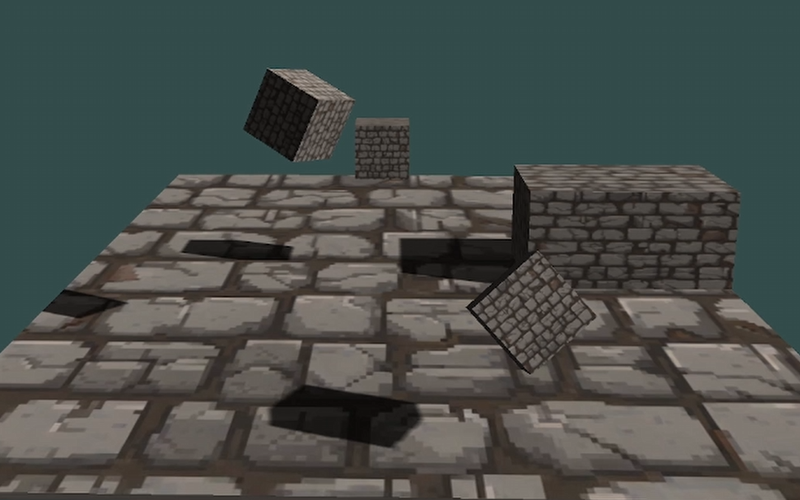

Description
Video
Checkpoint demonstration
My work
I focused on a pause system that does not rely on Time.timeScale. Instead, a centralized GameStateHandler drives the paused state, and player logic explicitly freezes movement + gravity + animation, while storing/restoring values to avoid bugs (like infinite jumping when pausing mid-air).
GameStateHandler (singleton + state machine + pause/resume)
public enum GameState
{
Playing,
Paused,
GameOver
}
public class GameStateHandler : MonoBehaviour
{
public static GameStateHandler Instance { get; private set; }
public GameState CurrentState { get; private set; } = GameState.Playing;
public Animator[] animators;
private UIManager uiManager;
private PlayerMovement playerMovement;
public bool isGameOver = false;
void Awake()
{
if (Instance == null) Instance = this;
else { Destroy(gameObject); return; }
uiManager = GetComponent<UIManager>();
if (uiManager == null)
{
Debug.Log("UIManager not found in scene, please attach.");
}
}
void Start()
{
if (uiManager != null) uiManager.OnResumePress();
}
public void ChangeState(GameState newState)
{
if (CurrentState == newState) return;
CurrentState = newState;
switch (newState)
{
case GameState.Paused: PauseGame(); break;
case GameState.Playing: ResumeGame(); break;
case GameState.GameOver: GameOver(); break;
}
}
public void TogglePause()
{
if (CurrentState == GameState.Playing) ChangeState(GameState.Paused);
else if (CurrentState == GameState.Paused) ChangeState(GameState.Playing);
}
public void PauseGame()
{
Debug.Log("Game Paused");
foreach (Animator animator in animators)
{
animator.enabled = false;
}
}
public void ResumeGame()
{
if (uiManager != null) uiManager.OnResumePress();
Debug.Log("Game Resumed");
ChangeState(GameState.Playing);
}
public void GameOver()
{
if (CurrentState == GameState.Paused) ResumeGame();
ChangeState(GameState.GameOver);
isGameOver = true;
Debug.Log("Game Over");
if (playerMovement != null) playerMovement.enabled = false;
}
}Player pause guard (freeze gravity + animation, restore cleanly)
// PlayerMovement
if (GameStateHandler.Instance != null &&
GameStateHandler.Instance.CurrentState == GameState.Paused)
{
if (ani != null && ani.speed != 0)
{
previousAnimatorSpeed = ani.speed;
ani.speed = 0;
}
if (rb.useGravity)
{
isGravityEnabled = true;
rb.useGravity = false;
rb.linearVelocity = Vector3.zero;
}
transform.position = previousPosition;
return;
}
else
{
if (!isGravityEnabled && rb.useGravity == false)
{
rb.useGravity = true;
}
if (ani != null && ani.speed == 0 && previousAnimatorSpeed != 0)
{
ani.speed = previousAnimatorSpeed;
}
}Checkpoint trigger (store respawn point + feedback)
public class Checkpoint : MonoBehaviour
{
private Respawner respawner;
private BoxCollider checkPointCollider;
public ParticleSystem effect;
[System.NonSerialized] public AudioManager audioManager;
void Awake()
{
checkPointCollider = GetComponent<BoxCollider>();
respawner = GameObject.FindGameObjectWithTag("Respawn").GetComponent<Respawner>();
audioManager = GameObject.FindGameObjectWithTag("Audio").GetComponent<AudioManager>();
}
private void OnTriggerEnter(Collider other)
{
if (other.gameObject.CompareTag("Player"))
{
respawner.respawnPoint = this.gameObject;
checkPointCollider.enabled = false;
audioManager.PlaySFX(audioManager.checkpoint);
effect.Play(true);
}
}
}Damage source trigger (hurt / death routing)
public class DamageSource : MonoBehaviour
{
PlayerUI playerUI;
PlayerMovement player;
CollectionSystem collectionSystem;
void Awake()
{
player = gameObject.GetComponent<PlayerMovement>();
collectionSystem = GetComponent<CollectionSystem>();
if (collectionSystem != null)
{
playerUI = collectionSystem.playerUI;
}
}
void OnTriggerEnter(Collider other)
{
if (other.gameObject.tag == "Enemy")
{
if (collectionSystem != null && playerUI != null)
{
player.GotHurt();
playerUI.MinusHealth();
}
else
{
Debug.Log("Collection system or PlayerUI is missing");
}
}
if (other.gameObject.tag == "Serpent")
{
playerUI.Death();
}
}
}Description
Video
Driving demonstration
My work
Modular approach: a base vehicle pawn holds shared driving behaviors (input, drift, boost, reset), while each car type focuses on tuning data. A unified controller swaps between FPS and vehicle pawns and swaps input mapping contexts.
Base car pawn: shared setup + driving hooks
// Base: shared components + chaos movement access
SetRootComponent(GetMesh());
InteriorSpringArm = CreateDefaultSubobject<USpringArmComponent>(TEXT("Interior Spring Arm"));
InteriorSpringArm->SetupAttachment(GetMesh());
InteriorCamera = CreateDefaultSubobject<UCameraComponent>(TEXT("Interior Camera"));
InteriorCamera->SetupAttachment(InteriorSpringArm, USpringArmComponent::SocketName);
ChaosVehicleMovement = CastChecked<UChaosWheeledVehicleMovementComponent>(GetVehicleMovement());
GetMesh()->SetSimulatePhysics(true);
GetMesh()->SetCollisionProfileName(FName("Vehicle"));Drift: reduce grip + increase angular damping
// Drift
bIsDrifting = true;
for (auto& WheelSetup : ChaosVehicleMovement->WheelSetups)
{
if (WheelSetup.WheelClass)
{
WheelSetup.WheelClass.GetDefaultObject()->FrictionForceMultiplier
= DefaultGrip * DriftGripReduction;
}
}
GetMesh()->SetAngularDamping(DefaultAngularDrag * DriftAngularDragMultiplier);
ChaosVehicleMovement->SetHandbrakeInput(true);Nitro: temporary engine boost + impulse
// Nitro boost
bIsBoosting = true;
bCanBoost = false;
float OriginalMaxTorque = ChaosVehicleMovement->EngineSetup.MaxTorque;
float OriginalMaxRPM = ChaosVehicleMovement->EngineSetup.MaxRPM;
ChaosVehicleMovement->EngineSetup.MaxTorque *= BoostMultiplier;
ChaosVehicleMovement->EngineSetup.MaxRPM *= 2.5f;
GetMesh()->AddImpulse(GetActorForwardVector() * BoostThrust);Car feel: muscle car tuning
// MuscleCar: tuning values live in the derived class
GetChaosVehicleMovement()->WheelSetups.SetNum(4);
GetChaosVehicleMovement()->WheelSetups[0].WheelClass = UCPP_BasicFrontWheel::StaticClass();
GetChaosVehicleMovement()->WheelSetups[2].WheelClass = UCPP_BasicRearWheel::StaticClass();
GetChaosVehicleMovement()->EngineSetup.MaxTorque = 750.f;
GetChaosVehicleMovement()->EngineSetup.MaxRPM = 7000.0f;Unified controller: swap pawns + swap input mapping contexts
// Pawn swap + mapping context swap
Subsystem->ClearAllMappings();
if (NewPawn == VehiclePawn && CarInputMappingContext)
{
Subsystem->AddMappingContext(CarInputMappingContext, 0);
}
else if (NewPawn == FPSPawn && FPSInputMappingContext)
{
Subsystem->AddMappingContext(FPSInputMappingContext, 0);
}
Possess(NewPawn);
Description
The in-engine UI allows us to spawn entities and play around with them.
At its current stage, the engine can:
• Render basic 3D and 2D objects.
• Load meshes via a .obj loader.
• Apply diffuse + specular textures.
• Configure lighting in real time (Directional / Point / Spot) with support for up to 16 lights.
• Use ImGui panels to spawn/edit entities, adjust render settings, and debug systems while running.
• Save/load entity data via JSON serialization.
Repo: DumpsterFireRefuelled
Video
Short demo showing shadow mapping and some short gameplay footage